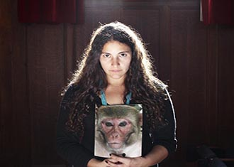

神奇四侠：众神之力，真言之女

她是战士公主、希腊半神，《蝙蝠侠大战超人》中首次在电影中出场的神奇女侠，身世也相当传奇：史上第一位女性超级英雄，给她配备真言套索的创作者还是发明测谎仪的先锋之一。从早期的争议设定，到BVS电影中的全片最燃，片里片外的神奇女侠走过了怎样的旅程？
女生爱玩自拍是自恋吗
从心理学的角度来看，这是一种典型的印象管理行为——操纵我们给别人留下的印象。女性之所以更青睐发自拍这种形式，是因为它强化了一种对女性来说特别重要的特质——外貌吸引力。
蝙蝠侠大战超人评论音轨
没看过漫画，还能不能看懂《蝙蝠侠大战超人》了？能，科学人评论音轨帮你读懂电影中的细节信息、彩蛋致敬、文化背景。
修复眼睛，干细胞展现新潜能

在临床试验和实验室研究中，干细胞都展现出了修复眼睛组织、重现光明的新潜能。
怎样的经济陷阱，你和猴子一样中计
过去，人们通常认为，我们在金融市场中的种种失误，都是由制度不健全、策略、文化等情境因素引起的。然而，有研究者指出，也许我们生来就带有这些缺点。
什么？鲨鱼皮其实会增加阻力
鲨鱼的皮肤上有一层粗糙的盾鳞，因为这些盾鳞长得像牙齿，所以也被称作“皮齿”。30年来，鲨鱼的皮齿是否能减小阻力一直在学界备受争议。而一项最新的研究结果提示，至少在巡游速度下，鲨鱼皮齿并不能起到减小阻力的作用。鲨鱼的皮肤上有一层粗糙的盾鳞，因为这些盾鳞长得像牙齿，所以也被称作“皮齿”。30年来，鲨鱼的皮齿是否能减小阻力一直在学界备受争议。而一项最新的研究结果提示，至少在巡游速度下，鲨鱼皮齿并不能起到减小阻力的作用。鲨鱼的皮肤上有一层粗糙的盾鳞，因为这些盾鳞长得像牙齿，所以也被称作“皮齿”。30年来，鲨鱼的皮齿是否能减小阻力一直在学界备受争议。而一项最新的研究结果提示，至少在巡游速度下，鲨鱼皮齿并不能起到减小阻力的作用。
神奇四侠：众神之力，真言之女
她是战士公主、希腊半神，《蝙蝠侠大战超人》中首次在电影中出场的神奇女侠，身世也相当传奇：史上第一位女性超级英雄，给她配备真言套索的创作者还是发明测谎仪的先锋之一。从早期的争议设定，到BVS电影中的全片最燃，片里片外的神奇女侠走过了怎样的旅程？
女生爱玩自拍是自恋吗
从心理学的角度来看，这是一种典型的印象管理行为——操纵我们给别人留下的印象。女性之所以更青睐发自拍这种形式，是因为它强化了一种对女性来说特别重要的特质——外貌吸引力。从心理学的角度来看，这是一种典型的印象管理行为——操纵我们给别人留下的印象。女性之所以更青睐发自拍这种形式，是因为它强化了一种对女性来说特别重要的特质——外貌吸引力。从心理学的角度来看，这是一种典型的印象管理行为——操纵我们给别人留下的印象。女性之所以更青睐发自拍这种形式，是因为它强化了一种对女性来说特别重要的特质——外貌吸引力。从心理学的角度来看，这是一种典型的印象管理行为——操纵我们给别人留下的印象。女性之所以更青睐发自拍这种形式，是因为它强化了一种对女性来说特别重要的特质——外貌吸引力。
蝙蝠侠大战超人评论音轨
没看过漫画，还能不能看懂《蝙蝠侠大战超人》了？能，科学人评论音轨帮你读懂电影中的细节信息、彩蛋致敬、文化背景。